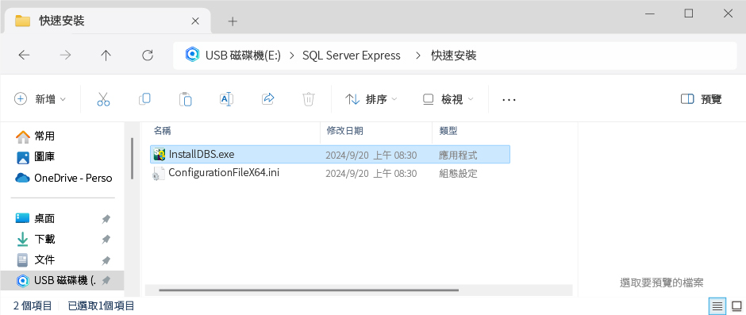
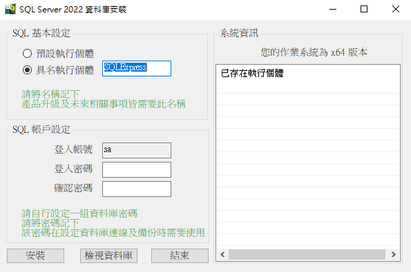

安裝資料庫引擎 / 快速安裝
注意事項
一、確認作業系統更新至最新狀態
• 安裝 SQL Server Express 前，請先完成 Winodws Update 將作業系統更新至最新的狀態。
二、安裝檔版本支援
• 本光碟隨附之安裝檔版本以系統支援度最高的版本為原則，
若您的電腦作業系統不支援，請自行至微軟網站下載，並參考
『標準安裝』
流程進行安裝。
安裝說明
STEP1
一、點擊下方『安裝檔路徑』，複製該路徑後，打開檔案總管找尋相對應檔案進行安裝。
安裝檔路徑

STEP2
一、請輸入『執行個體名稱』( 預設為SQLExpress，執行個體名稱不可重覆 )。
二、自訂一組『登入密碼』、『確認密碼』。
三、點擊『安裝』。
四、安裝完成後，請點擊『檢視資料庫』，當出現成功訊息時，表示資料庫系統已經安裝完成。
• 『初次安裝Microsoft SQL Server』，請使用預設執行個體名稱為SQLExpress的『執行個體名稱』即可，再次安裝請另外自訂一個執行個體名稱。
• 『執行個體名稱』若要自取一個名稱，請注意開頭需為英文，名稱需為英文、數字，字數不限。
• 『執行個體名稱』、『登入密碼』請務必記下。此部份是未來在任何情況下，連結資料庫時的必要輸入項目。
